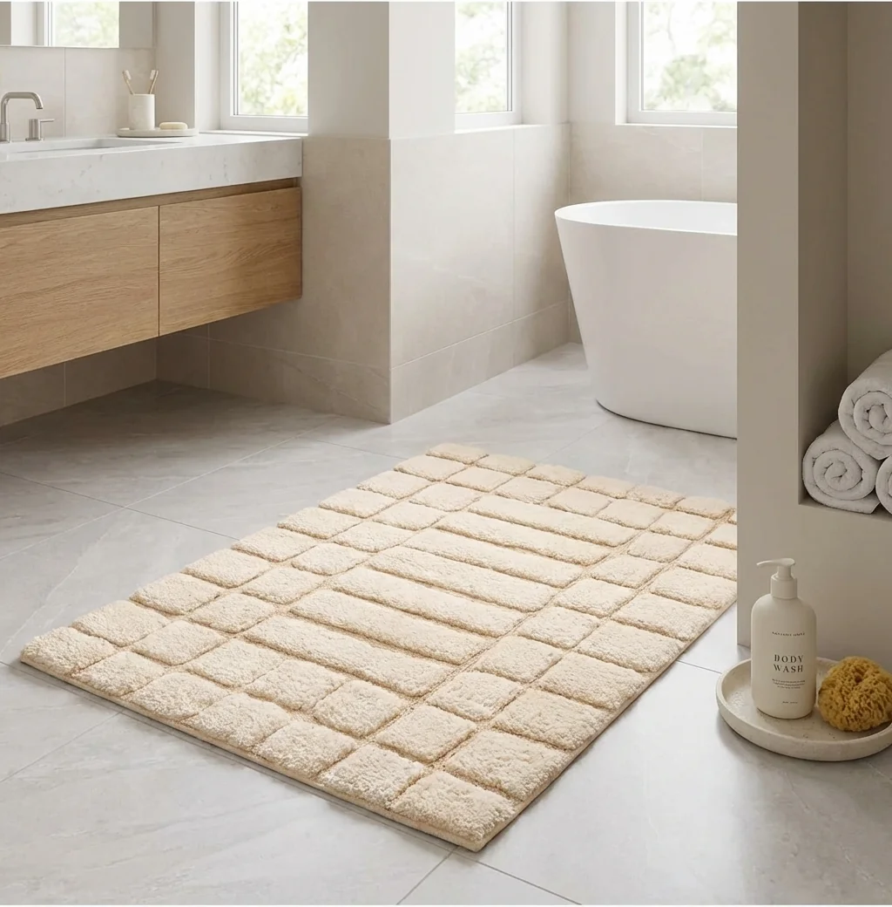
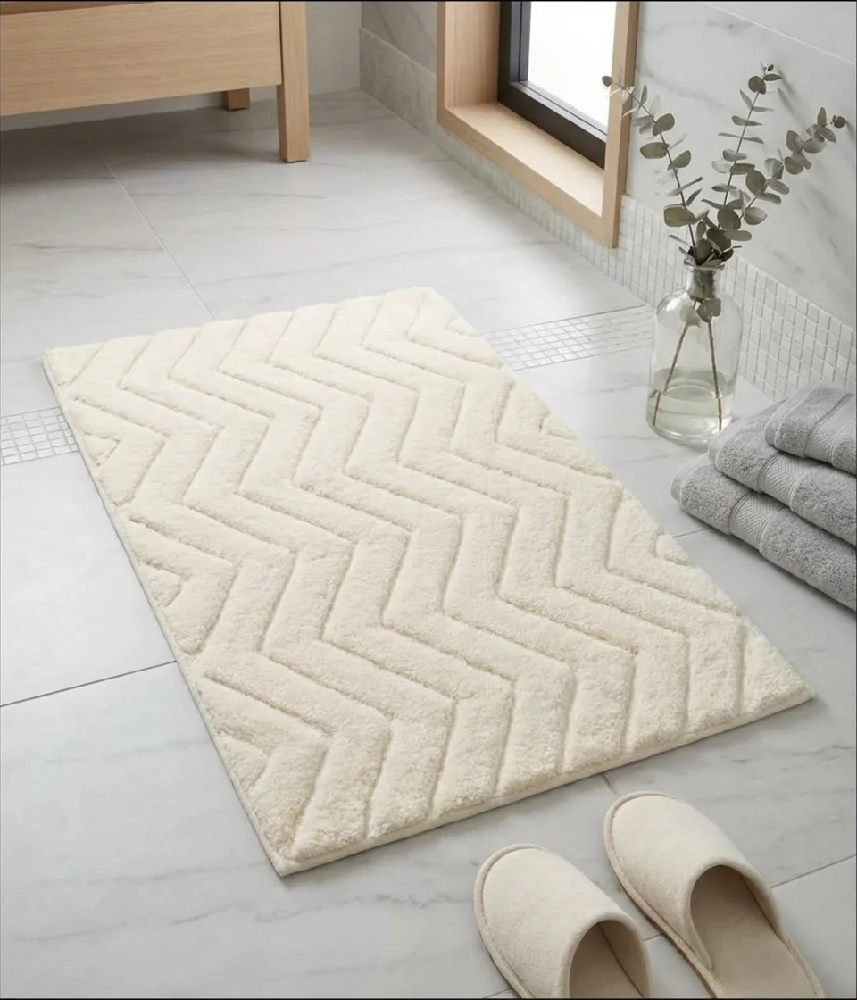
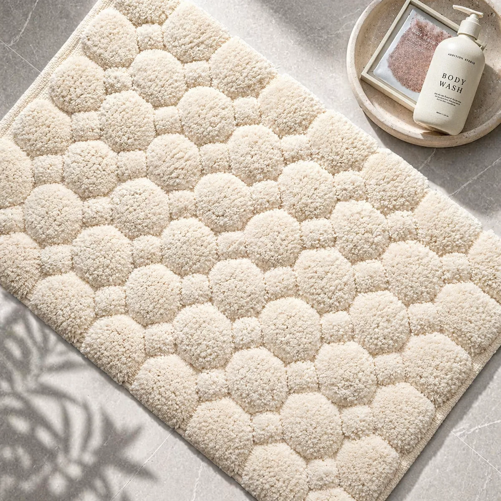
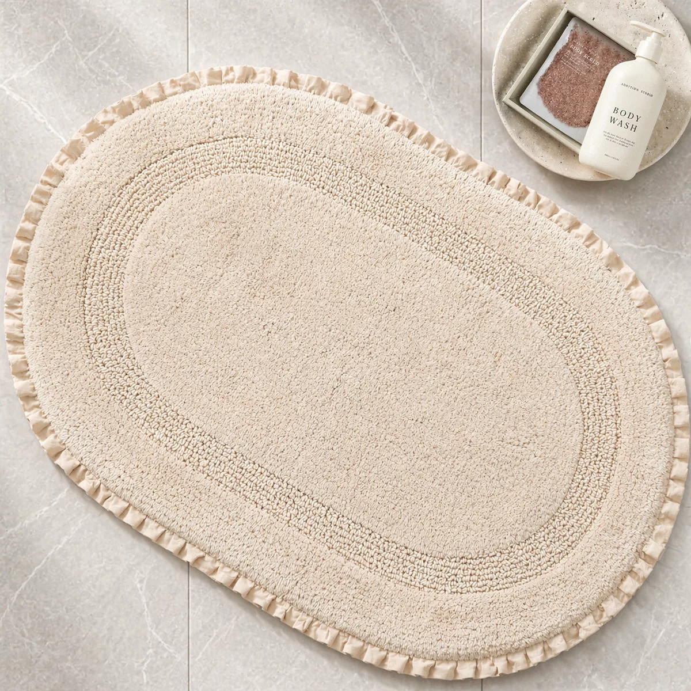
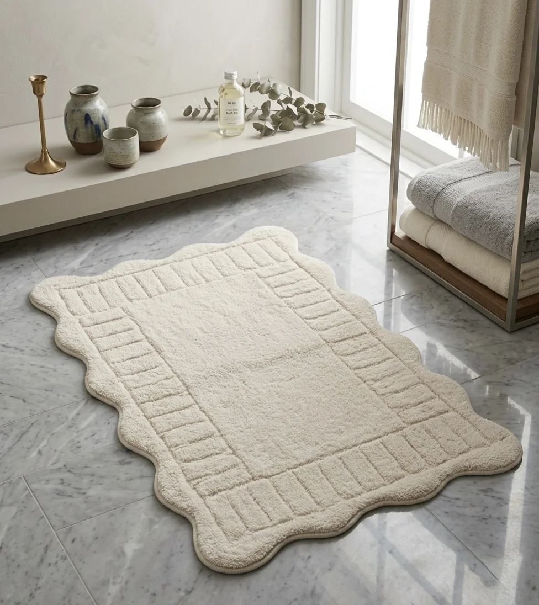
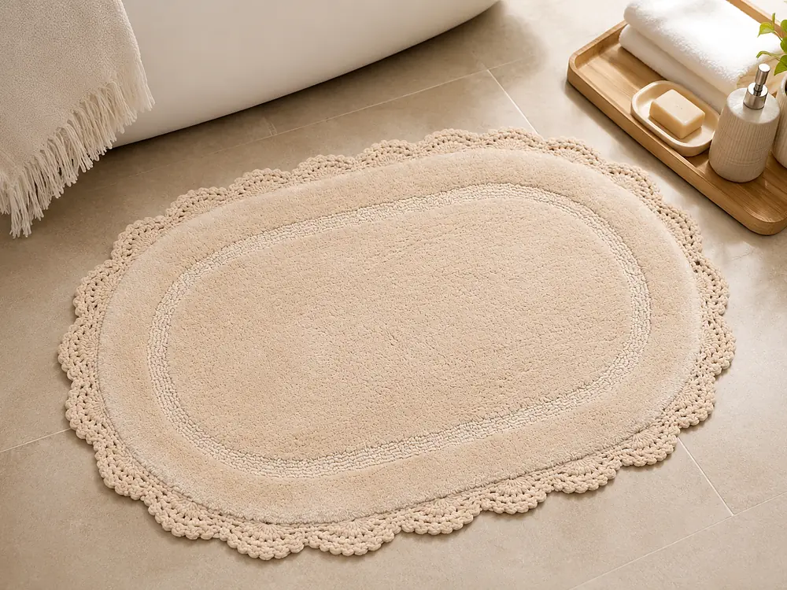

Bath Mats & Bath Rugs
Plush, absorbent cotton chenille · Single rugs, sets and runners in any size · Private label from India
Chenille Bath Rugs
Chenille is the bath rug customers reach out and touch. The surface is dense and velvety, it feels good underfoot straight out of the shower, and in cotton it soaks up water the way a bath rug should.
Abhi Home® makes chenille bath rugs in 100% cotton for private label programmes: single rugs in your sizes, coordinated sets with contour pieces and lid covers, and runners or large rugs made to any dimension. Every piece is finished with the anti-slip backing your programme needs.
Construction
Chenille is a yarn before it is a rug. Short lengths of yarn, the pile, are held between two core yarns and twisted together, so the pile stands out around the core like the fur of a caterpillar. That is where the name comes from: chenille is French for caterpillar.
Laid into a bath rug, those yarns build a deep, rounded surface that is softer than a standard cut pile. Because the pile is held by the twist of the core yarns, the quality of the yarn matters: a well-made chenille keeps its pile through washing, a poor one goes bald in patches. That is why we test pile security on every sample.
For Buyers
A clear brief gets you to an approved sample faster. These are the points we confirm with every chenille buyer:
Specification
| Fibre | 100% cotton chenille yarn |
|---|---|
| Formats | Single bath rugs, contour rugs, 2 and 3 piece sets, two-size sets, mat and runner sets, runners and large rugs |
| Sizes | Any size. Running sizes 50 x 80 cm and 60 x 90 cm, or your own dimensions |
| Pile | Pile height and weight set to your price point and hand feel; confirmed on the counter-sample |
| Backing | Latex as standard. Spray latex, hot melt and TPR rubber available; unbacked on request |
| Finishing | Bound or overlocked edges; scalloped and custom shapes on request |
| Certification | OEKO-TEX® Standard 100 as default |
| MOQ & lead time | Low, flexible MOQs. Counter-samples in 10 to 14 days, bulk in 60 to 75 days after sample approval |
Anti-Slip Backing
Every chenille bath rug can be finished with the backing your programme needs. We confirm the backing in writing at sampling, then wash-test it on the approved sample so grip and adhesion are proven before bulk. Unbacked versions are available on request.
A continuous latex coat locks the pile in and gives the firmest grip on tile. It is our standard backing. Latex has a heat limit, so it suits 30 to 40°C home washing and low or line drying, not hot tumble drying.
A lighter, sprayed latex layer. The rug stays softer and more flexible, with good grip for everyday home use.
A thermoplastic adhesive applied hot, usually as a dot or line pattern. It grips the floor while leaving part of the back open.
Thermoplastic rubber backing. Generally more flexible than latex and more durable through repeated machine washing, so it is the usual pick for rugs that will be washed often.
Compliance
Which certificate applies depends on the yarn and the programme, so we confirm it in writing at sampling. The certificate travels with the shipment.
Tested for harmful substances on the finished article. Our default certification for bath programmes.
For programmes built on certified organic cotton, with the transaction certificate supplied with the shipment.
Global Recycled Standard, for recycled-content programmes.
Sedex registered, SA 8000, BSCI, ISO 9001:2015 and ISO 14001.
Certificate scans are supplied on request. See all certifications
Trade Enquiry
Tell us the construction, size and volume you have in mind and we will come back with a costed quote and a sampling plan.
Reply within 12 working hours
Low, flexible MOQs: small first orders welcome
Physical samples sent at our cost
GOTS, OEKO-TEX, GRS and OCS available
Buyer Questions
Yes. We make our chenille bath rugs in 100% cotton chenille yarn, which gives the plush, velvety surface and the absorbency buyers expect from a cotton bath rug.
Yes, at 30 to 40°C on a home cycle. The backing sets the limit: standard latex does not like hot tumble drying, so if your customers will wash the rug often or dry it hot, ask us about TPR rubber backing.
Any new pile rug can release some loose fibre in its first washes. What matters is that the pile stays locked in. We check pile security on the sample and again after a wash test, before bulk is approved.
Yes. Chenille works as a single rug, as a 2 or 3 piece set with a contour rug and lid cover, as a two-size set, or as a runner or large rug in any size.
OEKO-TEX® Standard 100 is our default. If your programme needs organic or recycled-content claims, tell us at the brief stage and we will confirm what can be certified for that yarn.
Send us your sizes, colours and target price, and we will come back with a counter-sample plan and a costed quote.
More Bath Ranges
One factory, one set of certifications. Mix constructions and formats into a single coordinated bath programme.

Every bath rug format, made to your spec
Explore →Mat and contour, 3 piece and runner sets
Explore →Made to any length and width
Explore →
Cut & loop, combo and carved pile
Explore →
Texture built into the cloth
Explore →
Two usable faces
Explore →Animal, star and cloud shapes
Explore →
Oval, scallop and custom die-cut
Explore →GOTS certified organic cotton
Explore →
Hand-crocheted cotton, the handmade look buyers want now
Explore →